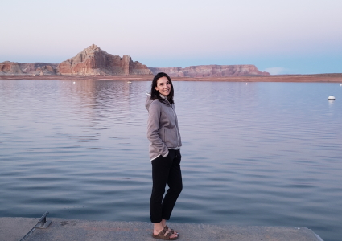

I am an aspiring environmental geoscientists working, learning, and exploring on the north shore of Lake Superior. I grew up in a small northern Ontario community located at the mouth of the Nipigon River. My father was a forester and my mother a fisheries biologist. Together they shared a love for science and the outdoors, both in their careers and at home. I beleive the positive exposure to natural sciences and outdoor activities helped shape the education paths I chose and my current career aspirations. I am inquisitive by nature, and am passionate about all things outdoors.
 I began my post-secondary education at the University of Guelph in 2013 studying Environmental Geoscience and Geomatics in with the hope that I would at some point return to northern Ontario with my newly learned skills and build my career. However, by January 2015 I had started to miss "Superior Country" and the ample opportunties to explore in northern Ontario, so I changed education paths and transfered into the Earth Science program at Lakehead University in Thunder Bay. Studying within the Department of Geology I completed courses in environmental geochemistry, sustainable natural resource management, environmental sustainability, mineralogy, structural geology, and groundwater management. Case studies further focused on various geoscientific theories and topics. In 2018 I graduated with first class standing from Lakehead University with an Honours Bachelour of Environmental Science, majoring in Earth Science.
For the past two and a half years I have worked as an environmental scientist in the environmental consulting industry in northwestern Ontario where I was responsible for conducting annual water quality and hydrogeological assessments, as well as providing technical support on a range of environmental field programs. During this time, I gained an appreciation for the value and usage of GIS-based data management systems and wished to further follow my interests in geomatics. So, in September of 2020 I made the decision to return to school and am currently persuring a post-graduate diploma in Geographic Information Systems (GIS), learning remotely through Fleming College. I hope to one day bring my new found skills in GIS to earth science projects all across the north!